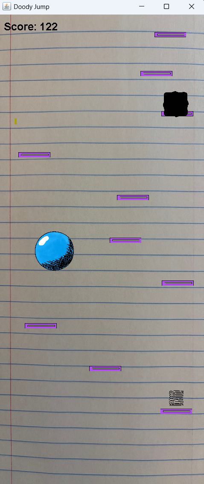

This is a remake of the Lima Sky game, Doodle Jump. This game, developed in Java, has all the functionality of the original game, with some graphical differences.

This project is similar to a car speedometer found on the road, but adapted to measure how fast a human is running. I used CLICK programming to handle the data from the sensors, and C-more to do the calculations.
No photo available